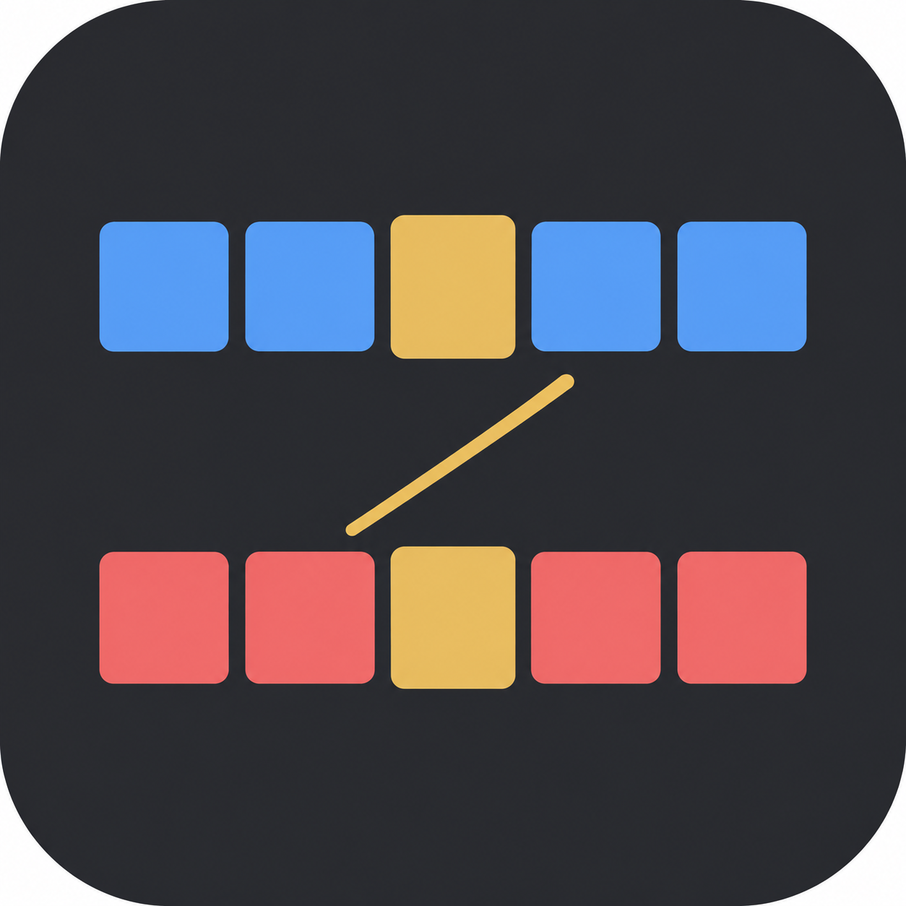

Draft Assist — propuestas de icono
La A es la recomendada: se lee mejor a 16×16 y conecta con el wordmark Draft/Assist.
Recomendada
A · Monograma D/
D dorada + diagonal azul/rojo. Máxima legibilidad.

Literal
B · Tablero
Filas de equipo y pick central. Más detalle, menos legible en pequeño.
Abstracta
C · Ficha de draft
Token hexagonal con split de lado. Distintiva, pero más genérica.